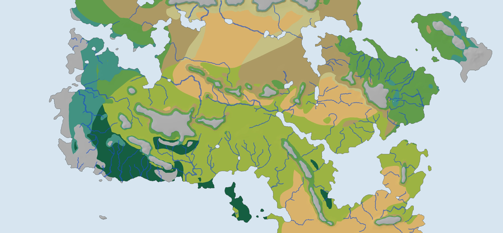
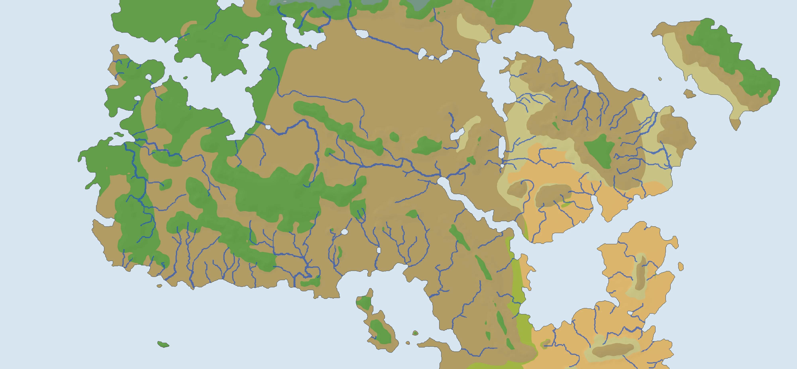

Free fit
World and physics fitted together to the painted seasonal zones. This completed build uses one surroundings layout.
Open either completed atlas to explore its climate, Whittaker potential biomes, seasonal maps and named places.

World and physics fitted together to the painted seasonal zones. This completed build uses one surroundings layout.

World fitted with Earth r29 physics held fixed. This completed build averages three surroundings layouts.
These are the last completed builds. The new three-fit campaign, including a separate Whittaker-fit atlas, is still running. Some linear solves in these older builds reached their iteration limit; their fit scores remain provisional.